BandMathImageFilterX (based on muParserX)¶
This section describes how to use the BandMathImageFilterX.
Fundamentals: headers, declaration and instantiation¶
A simple example is given below:
#include "otbBandMathImageFilterX.h"
#include "otbVectorImage.h"
As we can see, the new band math filter works with the class otb::VectorImage.
Syntax: first elements¶
The default prefix name for variables related to the ith input is im(i+1) (note the indexing from 1 to N, for N inputs). The user has the possibility of changing this default behaviour by setting its own prefix.
// All variables related to image1 (input 0) will have the prefix im1
filter->SetNthInput(0, image1);
// All variables related to image2 (input 1) will have the prefix toulouse
filter->SetNthInput(1, image2, "toulouse");
// All variables related to anotherImage (input 2) will have the prefix im3
filter->SetNthInput(2, anotherImage);
In this document, we will keep the default convention. The following list summarises the available variables for input #0 (and so on for every input).
Variables and their descriptions:
| Variables | Description | Type |
|---|---|---|
| im1 | a pixel from first input, made of n components/bands (first image is indexed by 1) | Vector |
| im1bj | jth component of a pixel from first input (first band is indexed by 1) | Scalar |
| im1bjNkxp | a neighbourhood (”N”) of pixels of the jth component from first input, of size kxp | Matrix |
| im1bjMini | global statistic: minimum of the jth band from first input | Scalar |
| im1bjMaxi | global statistic: maximum of the jth band from first input | Scalar |
| im1bjMean | global statistic: mean of the jth band from first input | Scalar |
| im1bjSum | global statistic: sum of the jth band from first input | Scalar |
| im1bjVar | global statistic: variance of the jth band from first input | Scalar |
| im1PhyX and im1PhyY | spacing of first input in X and Y directions | Scalar |
[variables]
In addition, we also have the generic variables idxX and idxY that represent the indices of the current pixel (scalars).
Note that the use of a global statistics will automatically make the filter (or the application) request the largest possible regions from the concerned input images, without user intervention.
For instance, the following formula (addition of two pixels)
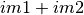
[firstequation]
is correct only if the two first inputs have the same number of bands. In addition, the following formula is not consistent even if im1 represents a pixel of an image made of only one band:
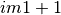
A scalar can’t be added to a vector. The right formula is instead (one can notice the way that muParserX allows vectors to be defined on the fly):
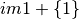
or
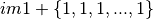
if im1 is made of n components.
On the other hand, the variable im1b1 for instance is represented as a scalar; so we have the following different possibilities:
Correct / incorrect expressions:
| Expression | Status |
|---|---|
| im1b1 + 1 | correct |
| {im1b1} + {1} | correct |
| im1b1 + {1} | incorrect |
| {im1b1} + 1 | incorrect |
| im1 + {im2b1,im2b2} | correct if im1 represents a pixel of two components (equivalent to im1 + im2) |
Similar remarks can be made for the multiplication/division; for instance, the following formula is incorrect:
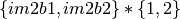
whereas this one is correct:
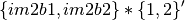
or in more simple terms (and only if im2 contains two components):
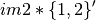
Concerning division, this operation is not originally defined between two vectors (see next section New operators and functions).
Now, let’s go back to the first formula: this one specifies the addition of two images band to band. With muParserX lib, we can now define such operation with only one formula, instead of many formulas (as many as the number of bands). We call this new functionality the batch mode, which directly arises from the introduction of vectors within muParserX framework.
Finally, let’s say a few words about neighbourhood variables. These variables are defined for each particular input, and for each particular band. The two last numbers, kxp, indicate the size of the neighbourhood. All neighbourhoods are centred: this means that k and p can only be odd numbers. Moreover, k represents the dimension in the x direction (number of columns), and p the dimension in the y direction (number of rows). For instance, im1b3N3x5 represents the following neighbourhood:
| . | . | . |
|---|---|---|
| . | . | . |
| . | . | . |
| . | . | . |
| . | . | . |
[correctness]
Fundamentally, a neighbourhood is represented as a matrix inside the muParserX framework; so the remark about mathematically well-defined formulas still stands.
New operators and functions¶
New operators and functions have been implemented within BandMathImageFilterX. These ones can be divided into two categories.
- adaptation of existing operators/functions, that were not originally defined for vectors and matrices (for instance cos, sin, …). These new operators/ functions keep the original names to which we add the prefix “v” for vector (vcos, vsin, …) .
- truly new operators/functions.
Concerning the last category, here is a list of implemented operators or functions (they are all implemented in otbParserXPlugins.h/.cxx files -OTB/Code/Common-):
Operators div and dv The first operator allows the definition of an element-wise division of two vectors (and even matrices), provided that they have the same dimensions. The second one allows the definition of the division of a vector/matrix by a scalar (components are divided by the same unique value). For instance:
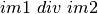
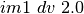
Operators mult and mlt These operators are the duals of the previous ones. For instance:
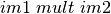
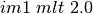
Note that the operator ’*’ could have been used instead of ’pw’ one. But ’pw’ is a little bit more permissive, and can tolerate a one-dimensional vector as the right operand.
Operators pow and pw The first operator allows the definition of an element-wise exponentiation of two vectors (and even matrices), provided that they have the same dimensions. The second one allows the definition of the division of a vector/matrix by a scalar (components are exponentiated by the same unique value). For instance:
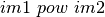
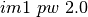
Function bands This function allows to select specific bands from an image, and/or to rearrange them in a new vector; for instance:
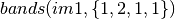
produces a vector of 4 components made of band 1, band 2, band 1 and band 1 values from the first input. Note that curly brackets must be used in order to select the desired band indices.
** Function dotpr ** This function allows the dot product between two vectors or matrices (actually in our case, a kernel and a neighbourhood of pixels):
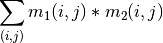
For instance:
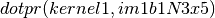
is correct provided that kernel1 and im1b1N3x5 have the same dimensions. The function can take as many neighbourhoods as needed in inputs.
Function mean This function allows to compute the mean value of a given vector or neighborhood (the function can take as many inputs as needed; one mean value is computed per input). For instance:
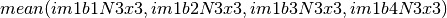
Note: a limitation coming from muparserX itself makes it impossible to pass all those neighborhoods with a unique variable.
Function var This function computes the variance of a given vector or neighborhood (the function can take as many inputs as needed; one var value is computed per input). For instance:
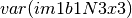
Function median This function computes the median value of a given vector or neighborhood (the function can take as many inputs as needed; one median value is computed per input). For instance:
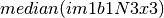
Function corr This function computes the correlation between two vectors or matrices of the same dimensions (the function takes two inputs). For instance:
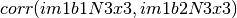
Function maj This function computes the most represented element within a vector or a matrix (the function can take as many inputs as needed; one maj element value is computed per input). For instance:
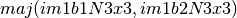
Function vmin and vmax These functions calculate the min or max value of a given vector or neighborhood (only one input). For instance:
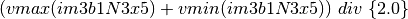
Function cat This function concatenates the results of several expressions into a multidimensional vector, whatever their respective dimensions (the function can take as many inputs as needed). For instance:
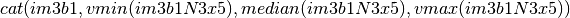
Note: the user should prefer the use of semi-colons (;) when setting expressions, instead of directly use this function. The filter or the application will call the function ’cat’ automatically. For instance:
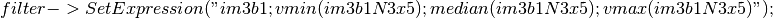
Please, also refer to the next section Application Programming Interface (API).
Function ndvi This function implements the classical normalized difference vegetation index; it takes two inputs. For instance:
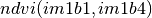
First argument is related to the visible red band, and the second one to the near-infrared band.
The table below summarises the different functions and operators.
Functions and operators summary:
| Variables | Remark |
|---|---|
| ndvi | two inputs |
| bands | two inputs; length of second vector input gives the dimension of the output |
| dotptr | many inputs |
| cat | many inputs |
| mean | many inputs |
| var | many inputs |
| median | many inputs |
| maj | many inputs |
| corr | two inputs |
| div and dv | operators |
| mult and mlt | operators |
| pow and pw | operators |
| vnorm | adapation of an existing function to vectors: one input |
| vabs | adapation of an existing function to vectors: one input |
| vmin | adapation of an existing function to vectors: one input |
| vmax | adapation of an existing function to vectors: one input |
| vcos | adapation of an existing function to vectors: one input |
| vsin | adapation of an existing function to vectors: one input |
| vtan | adapation of an existing function to vectors: one input |
| vtanh | adapation of an existing function to vectors: one input |
| vsinh | adapation of an existing function to vectors: one input |
| vcosh | adapation of an existing function to vectors: one input |
| vlog | adapation of an existing function to vectors: one input |
| vlog10 | adapation of an existing function to vectors: one input |
| vexp | adapation of an existing function to vectors: one input |
| vsqrt | adapation of an existing function to vectors: one input |
[variables]
Application Programming Interface (API)¶
In this section, we make some comments about the public member functions of the new band math filter.
/** Set the nth filter input with or without a specified associated variable name */
void SetNthInput( unsigned int idx, const ImageType * image);
void SetNthInput( unsigned int idx, const ImageType * image, const std::string& varName);
/** Return a pointer on the nth filter input */
ImageType * GetNthInput(unsigned int idx);
Refer to the section Syntax: first elements, where the two first functions have already been commented. The function GetNthInput is quite clear to understand.
/** Set an expression to be parsed */
void SetExpression(const std::string& expression);
Each time the function SetExpression is called, a new expression is pushed inside the filter. There are as many outputs as there are expressions. The dimensions of the outputs (number of bands) are totally dependent on the dimensions of the related expressions (see also last remark of the section :ref:`syntax`). Thus, the filter always performs a pre-evaluation of each expression, in order to guess how to allocate the outputs.
The concatenation of the results of many expressions (whose results can have different dimensions) into one unique output is possible. For that purpose, semi-colons (“;”) are used as separating characters. For instance:
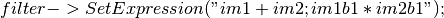
will produce a unique output (one expression) of many bands (actually, number of bands of im1 + 1).
/** Return the nth expression to be parsed */
std::string GetExpression(int) const;
This function allows the user to get any expression by its ID number.
/** Set a matrix (or a vector) */
void SetMatrix(const std::string& name, const std::string& definition);
This function allows the user to set new vectors or matrices. This is particularly useful when the user wants to use the dotpr function (see previous section). First argument is related to the name of the variable, and the second one to the definition of the vector/matrix. The definition is done by a string, where first and last elements must be curly brackets (“{” and “}”). Different elements of a row are separated by commas (“,”), and different rows are separated by semi-colons (“;”). For instance:
filter->SetMatrix("kernel1","{ 0.1 , 0.2 , 0.3 ; 0.4 , 0.5 , 0.6 ; \
0.7 , 0.8 , 0.9 ; 1.0 , 1.1 , 1.2 ; 1.3 , 1.4 , 1.5 }");
defines the kernel1, whose elements are given as follows:
| 0,1 | 0,2 | 0,3 |
|---|---|---|
| 0,4 | 0,5 | 0,6 |
| 0,7 | 0,8 | 0,9 |
| 1,0 | 1,1 | 1,2 |
| 1,3 | 1,4 | 1,5 |
Definition of kernel1.
[correctness]
/** Set a constant */
void SetConstant(const std::string& name, double value);
This function allows the user to set new constants.
/** Return the variable and constant names */
std::vector<std::string> GetVarNames() const;
This function allows the user to get the list of the variable and constant names, in the form of a std::vector of strings.
/** Import constants and expressions from a given filename */
void ImportContext(const std::string& filename);
This function allows the user to define new constants and/or expressions (context) by using a txt file with a specific syntax. For the definition of constants, the following pattern must be observed: #type name value. For instance:
#F expo 1.1 #M kernel1 { 0.1 , 0.2 , 0.3 ; 0.4 , 0.5 , 0.6 ; 0.7 , 0.8 , 0.9 ; 1 , 1.1 , 1.2 ; 1.3 , 1.4 , 1.5 }
As we can see, #I/#F allows the definition of an integer/float constant, whereas #M allows the definition of a vector/matrix. It is also possible to define expressions within the same txt file, with the pattern #E expr. For instance:
#F expo 1.1 #M kernel1 0.1 , 0.2 , 0.3 ; 0.4 , 0.5 , 0.6 ; 0.7 , 0.8 , 0.9 ; 1 , 1.1 , 1.2 ; 1.3 , 1.4 , 1.5 #E dotpr(kernel1,im1b1N3x5)
/** Export constants and expressions to a given filename */
void ExportContext(const std::string& filename);
This function allows the user to export a text file that saves its favorite constant or expression definitions. Such a file will be reusable by the ImportContext function (see above).
Please, also refer to the section dedicated to application.